Task Flows
The two main task flows that I built out are for cooking a meal in the oven and for provisioning a new appliance into the app.
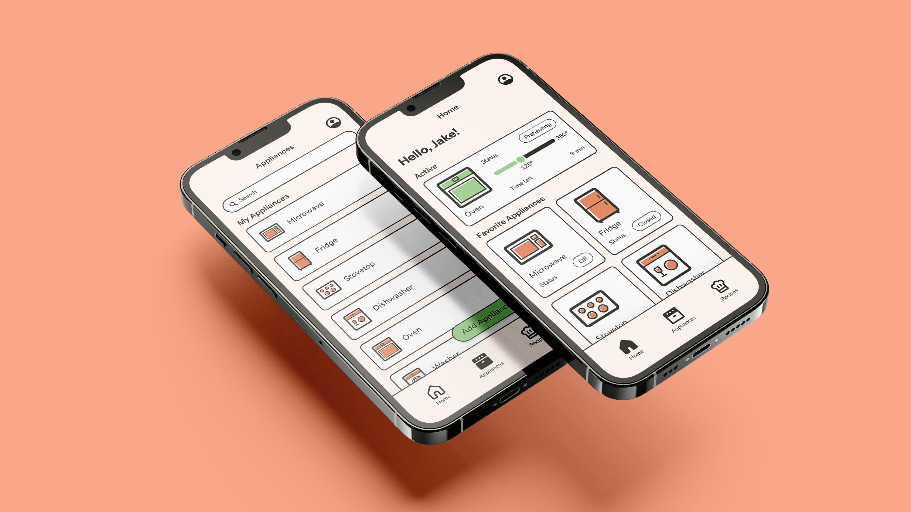
Many home appliances do not give users enough information on their status of how long they will take to do their specified task. For example, ovens don’t say how long they will preheat and it can be difficult ot know how long to cook something for. The goal is to design an intuitive app that will provide real-time updates to users about their kitchen appliances and devices in their home that is customizable.
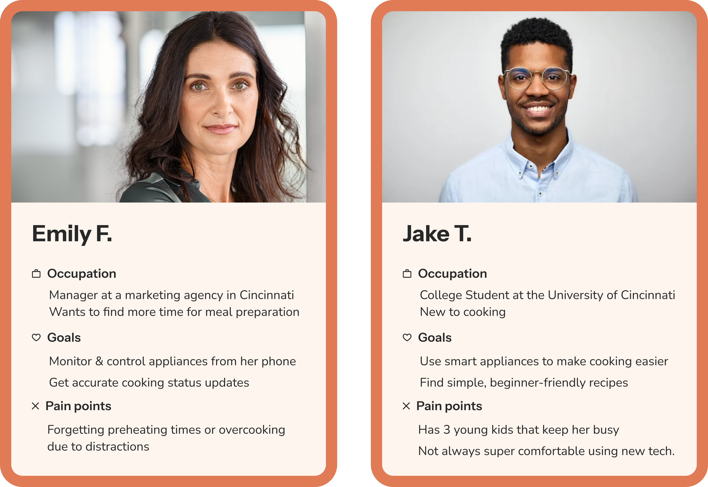
The two main task flows that I built out are for cooking a meal in the oven and for provisioning a new appliance into the app.
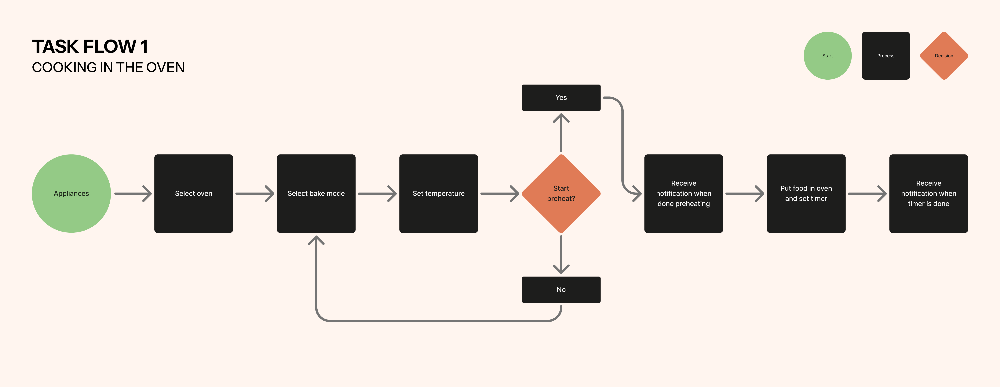
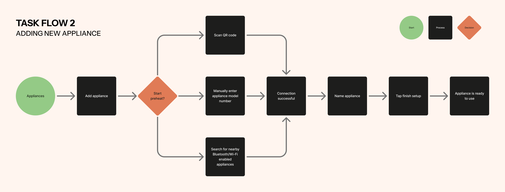
Using user personas, task flows, and information architecture, I began sketching initial ideas for the screens to get feedback from my peers.
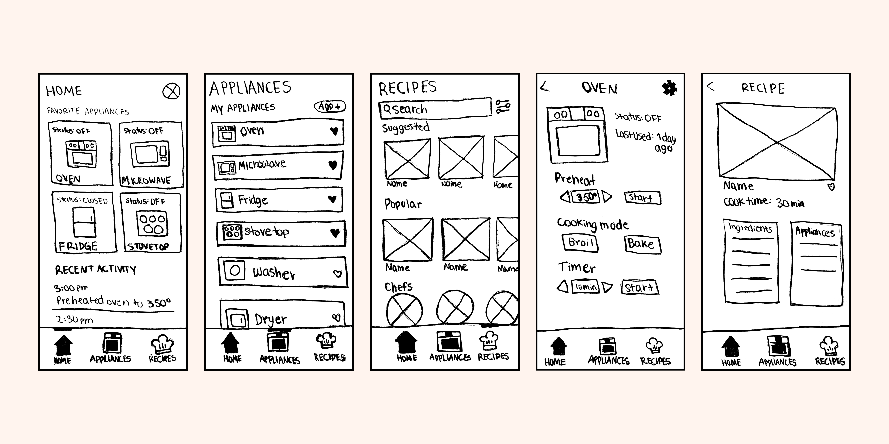

I wanted the app to appeal to people who are new to using to cooking and using their appliances. The goal is to make the app feel friendly, warm, and not daunting as some appliances are for first time users. I used interesting, bold icons to appeal to a younger audience and intrigue them beyond just using more basic appliance icons.
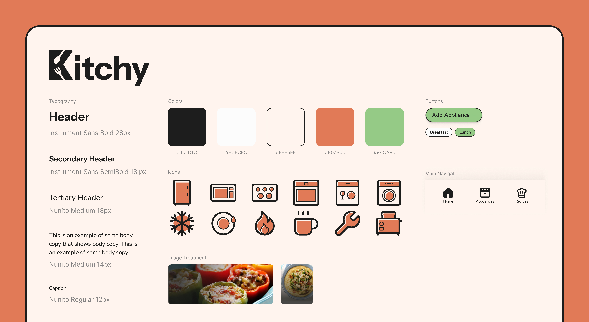
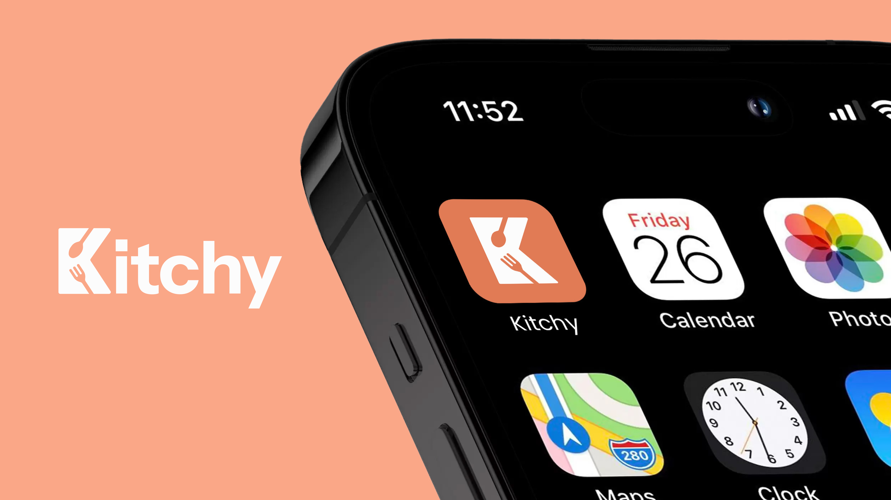
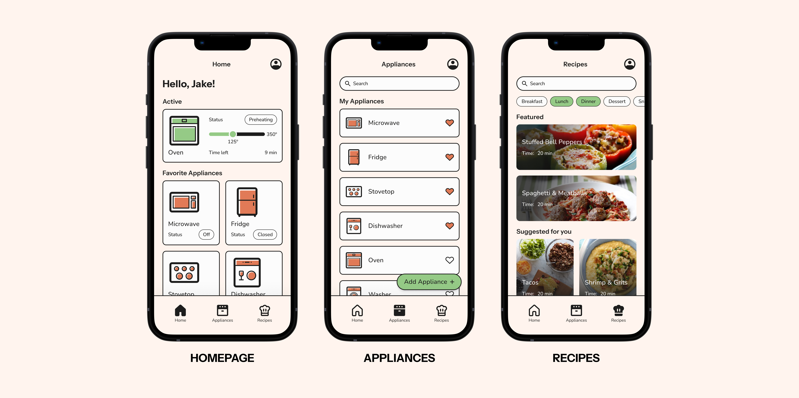
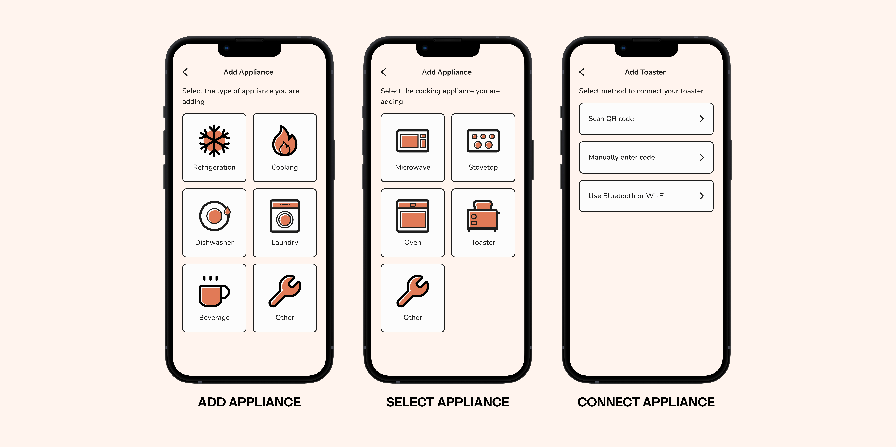
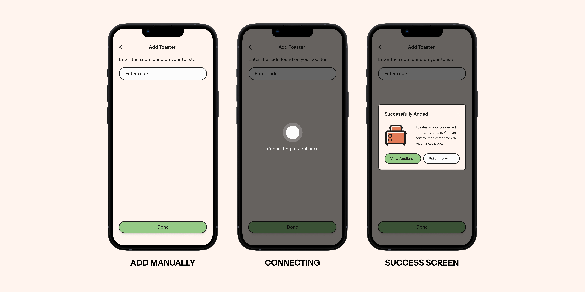
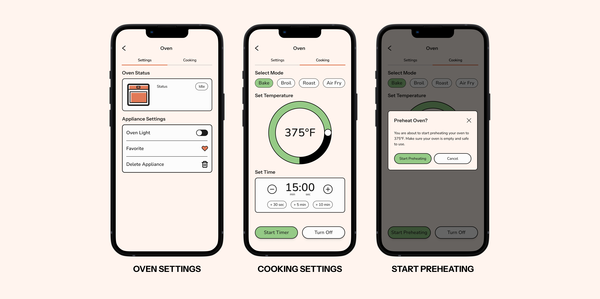
As a way to promote the app to young adults interested in understanding their kitchen and learning to cook, I designed a poster advertisement to promote the app.
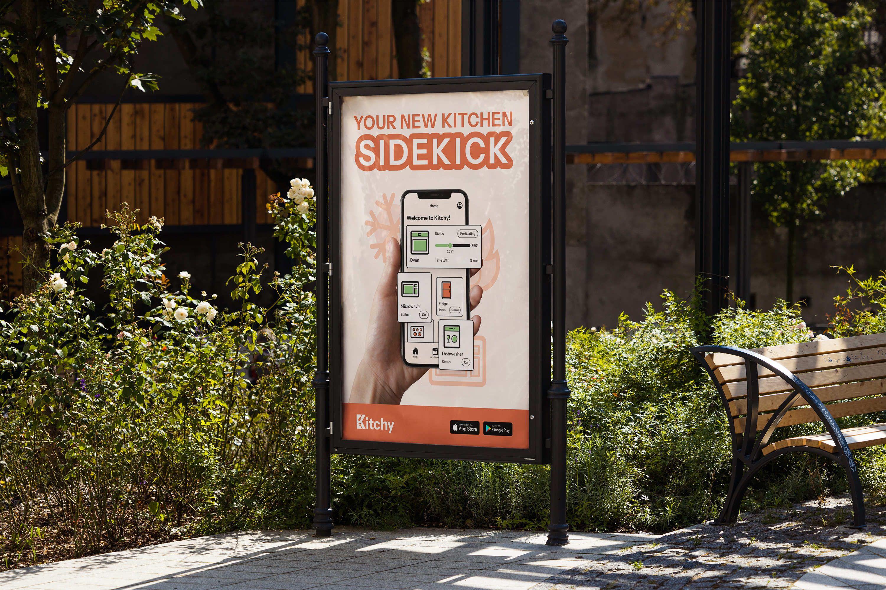